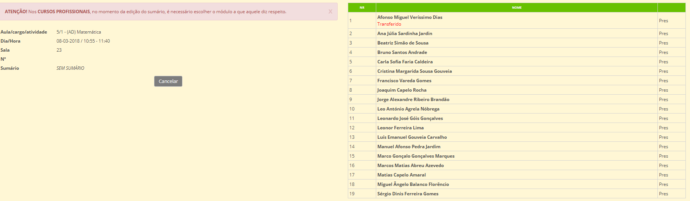
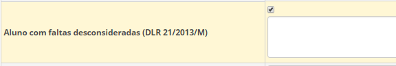

Faltas
"A falta é a ausência do aluno a uma aula ou outra atividade de frequência obrigatória ou facultativa caso tenha havido lugar a inscrição, a falta de pontualidade ou a comparência sem o material didático ou equipamento necessários..."
O controlo da assiduidade dos alunos é obrigatório por parte de todas as escolas da RAM.
Sempre que um aluno estiver ausente de uma aula ou atividade obrigatória deve ser registada falta por parte do professor responsável pela disciplina.
As faltas são marcadas pelo docente no momento que faz o sumário. O docente clica no separador Sumários, escolhe o Cargo/atividade/aula (ex: Matemática), seleciona o mês e clica em editar para abrir o Sumário. Escreve o Sumário da respetiva disciplina e no lado direito aparece o nome de todos os alunos que integram essa turma/disciplina. O professor marca falta injustificada aos alunos ausentes.

| Responsáveis | Marcação de faltas | Observações |
|---|---|---|
| Professor da Disciplina | da disciplina | Professor marca Falta Injustificada na ausência do aluno |
| Diretor de turma | Pode: Marcar falta, Justificar e/ou Remover | Só o diretor de turma pode modificar as faltas. Ex: falta Injustificada, o D.T. pode justificar mediante a justificação. |
| Direção Executiva ou Serviços Administrativos | Pode abrir durante 15 a alteração de faltas noutro período. | Depois de abrir, pode fechar, mas caso não feche, a aplicação fecha automaticamente após 15 dias. |
Aviso
As faltas dos alunos são geridas e trancadas em cada período.
Desconsiderar Faltas
"Sempre que cesse o incumprimento do dever de assiduidade poderão ser desconsideradas as faltas em excesso por proposta do diretor de turma apresentada ao órgão de gestão, que decidirá em função da análise do comportamento e do grau de empenho revelados pelo aluno em causa"
Estatuto do Aluno
No final do ano letivo, o diretor de turma pode propor à direção para desconsiderar as faltas do aluno. Após análise do mesmo e caso seja aceite, a Direção pode autorizar a desconsideração das faltas do aluno:
- O DT entra na matrícula do aluno, clica em editar
- Depois clica onde diz Aluno com faltas desconsideradas (DLR 21/2013/M)

Depois deste processo, o DT vai ao aluno e desconsidera as faltas que pretende.
Apoios
Nas aulas dadas como apoios não há marcação de faltas, mas sim presenças aos alunos presentes.